AI 에이전트 시대의 개막과
공공 구현 지형도
1차시는 네 가지를 다룹니다.
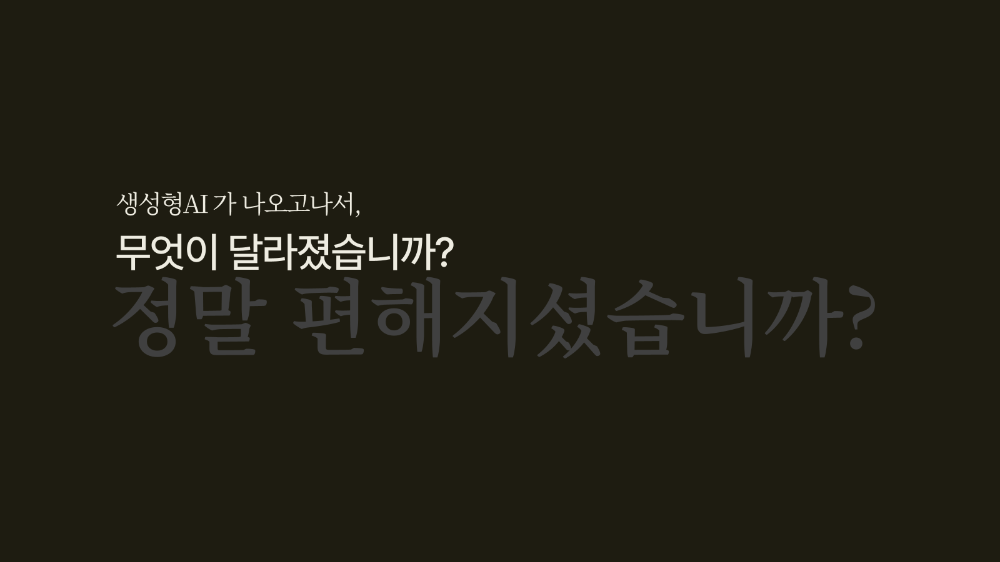
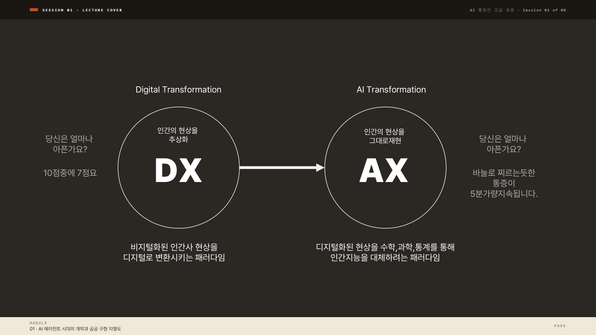
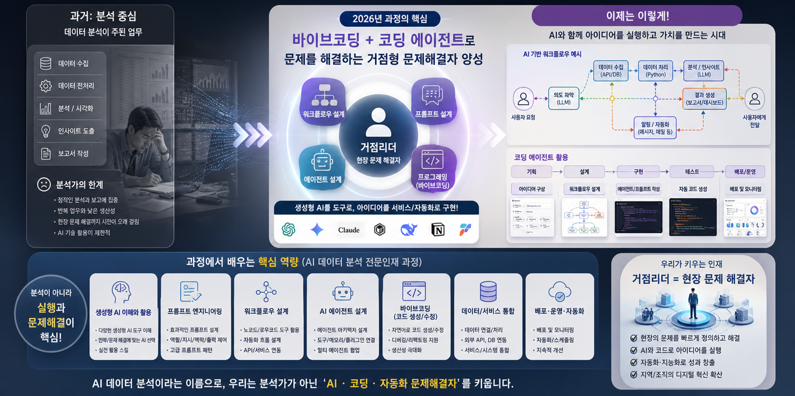
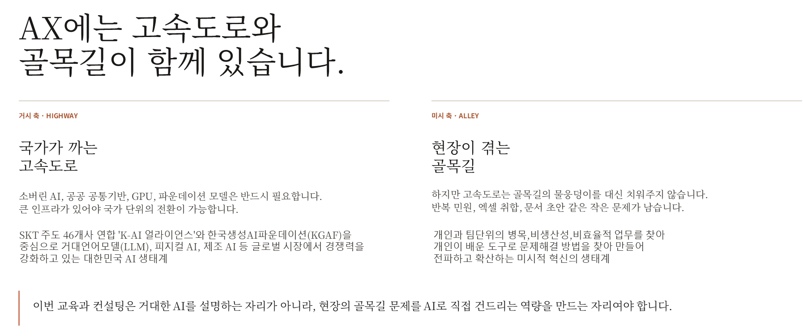
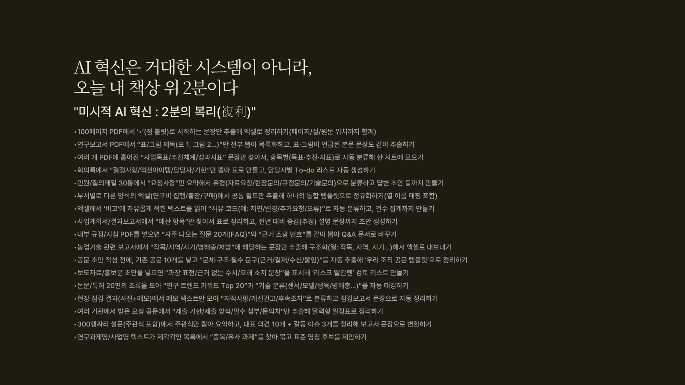
| 회차 | 타이틀 |
|---|---|
| 01 | AI 에이전트 시대와 공공 구현 지형 · 환경 세팅 |
| 02 | 프론티어 모델 심층 탐구 + AI 도구 생태계 50선 |
| 03 | 프롬프트·컨텍스트·하네스 설계와 워크플로우 |
| 04 | 바이브 코딩 어시스트 ① · 데이터 분석·시각화 |
| 05 | 바이브 코딩 어시스트 ② · 업무 자동화·내부망 연동 |
| 06 | 에이전트 도구 마스터리 · Claude Code·Cursor |
| 07 | 로컬 RAG · 백엔드 결합 웹서비스 |
| 08 | API·MCP 풀스택 에이전트 · 캡스톤 발표 |
같은 부서 과제를 4~5회차에 ChatGPT·Claude의 답을 직접 받아 어시스트 방식으로 한 번 만들고, 6~8회차에 Claude Code·Cursor가 한 번의 지시로 같은 결과를 내도록 다시 만든다. 두 결과물의 소요 시간·수정 횟수·재현 가능성을 직접 비교한다.
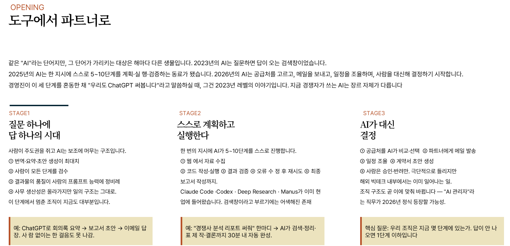
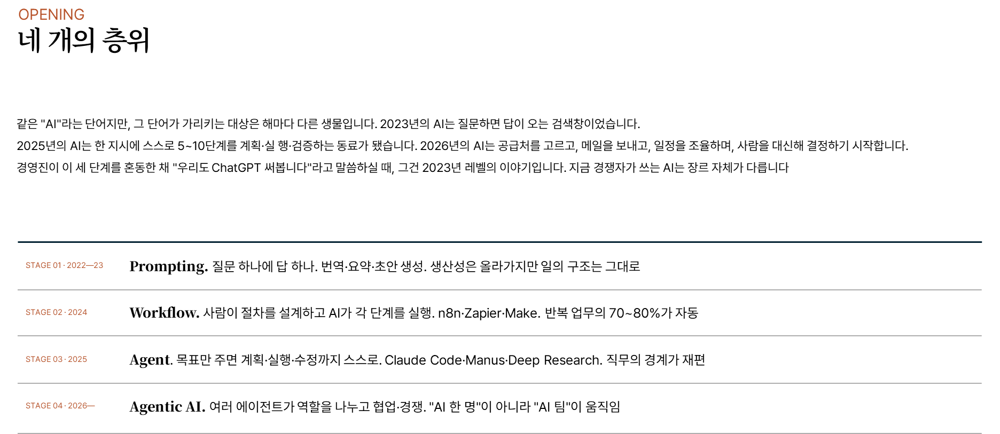
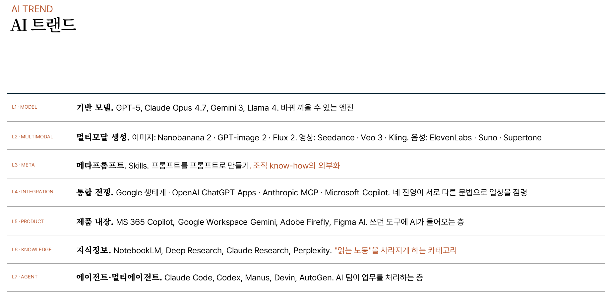
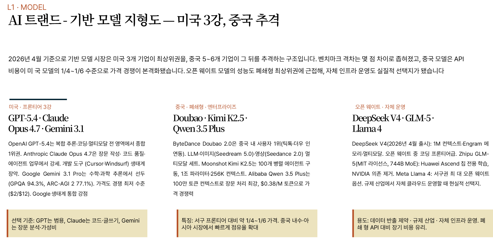
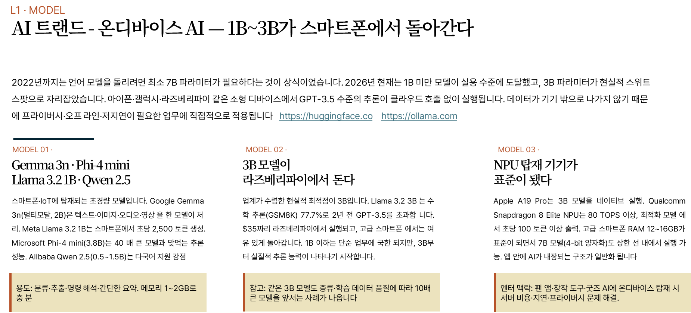
| 연도 | 주요 출시 | 공공 관점 의미 |
|---|---|---|
| 2020 | GPT-3 (OpenAI) | 대규모 언어모델 · API 호출형 AI의 시작 |
| 2022.11 | ChatGPT | 대화형 UI · 비개발자 확산 · 업무 투입 시작 |
| 2023 | GPT-4 · Claude · Bard · PaLM2 | 경쟁 구도 · 한국어 품질 향상 · 긴 문맥 |
| 2024 | Claude 3 · GPT-4o | 멀티모달 · 추론 모델 · 100만 토큰 |
| 2024.11 | MCP 프로토콜 공개 | 도구 연결 표준 · 에이전트 시대 개막 |
| 2025 | 에이전트 | 실행 권한 부여 · 바이브 코딩 일반화 |
각 단계마다 공공에서 쓸 수 있는 범위가 바뀌었다. 지금 우리는 에이전트 단계에 있고, 이번 8회차 과정은 그 단계를 실무로 옮기는 과정이다.
github.com/karpathy/nanoGPT)를 한 번 실행해 보면 이 사이클이 LOAD → ATTEND → PREDICT → REPEAT 네 단계로 깔끔하게 분해됩니다. 본 회차의 목적은 트랜스포머 수식을 외우는 것이 아니라, 이 4단계가 실무 프롬프트 설계·컨텍스트 한도·환각 발생과 어떻게 연결되는지 한 번 잡고 가는 것입니다. ( https://poloclub.github.io/transformer-explainer/)토큰화
가중치
다음 토큰
루프
| 세대 | 작동 방식 | 결정적 한계 |
|---|---|---|
| n-gram 1990년대~ | 직전 n-1개 단어로 다음 단어의 조건부 확률을 계산. 통계 기반. | 긴 문맥 학습 불가, 확률표가 어휘 수의 거듭제곱으로 폭증 |
| RNN · LSTM 1997 LSTM, 2014 seq2seq | 은닉 상태(hidden state)에 문맥을 누적하며 순차 처리. 구글 번역 1세대 엔진. | 긴 문장에서 정보 소실, 병렬 처리 불가, 학습 느림 |
| Transformer 2017 'Attention Is All You Need' | 문장 전체를 행렬로 병렬 처리, Self-Attention으로 모든 토큰 관계를 동시에 계산 | 입력 길이 제곱 비용, 컨텍스트 한도 |
이 한 줄을 잡고 있으면 본 과정 후반에 다루는 RAG·메타 프롬프트·하네스가 모두 이 4단계 루프 어디를 보강하는 기술인지로 분류됩니다. RAG는 LOAD에 외부 검색 결과를 끼워 넣는 기술, 메타 프롬프트는 LOAD의 양식을 표준화하는 기술, 하네스는 LOAD·도구·승인을 한 묶음으로 운영하는 실행 환경입니다. 본 슬라이드의 실습 도구는 두 가지입니다. 첫째, Karpathy의 nanoGPT 리포(github.com/karpathy/nanoGPT) — 약 300줄 파이썬으로 4단계 루프를 직접 따라갈 수 있습니다. 둘째, Transformer Explainer(poloclub.github.io/transformer-explainer) — 브라우저에서 Q·K·V와 멀티헤드 동작을 실시간 시각화로 봅니다.
| 문서 유형 | 잡아야 할 단서 |
|---|---|
| 법령 · 조례 | 조건절 · 예외 조항 · 시행일 · 적용 범위 |
| 민원 | 반복성 · 핵심 요구 · 수신자 지정 · 감정 강도 |
| 회의록 | 결정 문구 · 담당자 · 기한 · 조건부 합의 |
| 보고서 | 수치 변동 · 근거 출처 · 한정 조건 |
| 공문 | 발수신 기관 · 협조 요청 · 회신 기한 · 붙임 연번 |
poloclub.github.io/transformer-explainer)에 "버스 노선 증설 민원" 같은 문장을 입력하면 Attention 맵이 실시간 표시됩니다. 각 토큰이 어떤 토큰을 얼마나 참조하는지 선의 굵기로 시각화되며, 헤드 번호를 바꾸면 같은 문장에 대해 다른 헤드가 어떤 단서에 주목하는지 비교할 수 있습니다.| 기준 | 점검 포인트 |
|---|---|
| 한국어 품질 | 공공 문서·법령 인용 정확도 · 존댓말 처리 |
| 컨텍스트 창 | 한 번에 넣을 수 있는 문서 분량 (128K~1M) |
| 멀티모달 | 이미지·PDF·음성 입력 지원 여부 |
| 에이전트·도구 | Claude Code·Cursor·MCP 연동 성숙도 |
| 가격·API | 월 정액 vs 토큰 과금 · 기관 구매 방식 |
Reasoning 모델 (o-series)
경량 모델 (mini)
공공기관에서 GPT를 도입할 때 고려해야 할 핵심 사항은 네 가지입니다. 첫째, GPT는 OpenAI 서버에서 동작하는 외부망 서비스이므로 비식별화 처리가 필수이며, 민감 정보가 포함된 원본 문서는 직접 업로드하지 않는 것이 원칙입니다. 둘째, 과금 구조는 개인 유료 플랜(ChatGPT Plus 월 $20, Pro 월 $200)과 API 토큰 과금 두 가지로 나뉘며, 부서 단위 도입은 ChatGPT Team 또는 Enterprise 플랜이 데이터 학습 제외와 SSO를 함께 제공합니다. 셋째, 한국 공공기관은 데이터 위치(Data Residency)와 Zero Data Retention 옵션을 사전에 확인해야 합니다. 넷째, Custom GPTs는 기관 내부 자료를 묶어 부서 표준 도구로 만들 수 있어 도입 초반 가치가 큽니다. 이 네 가지를 점검한 뒤 단일 부서 시범 도입으로 시작하는 것이 안전한 경로입니다.
2회차에서 GPT·Gemini와 비교 후 선택은 자유. 단 교육 중 공통 실습은 Claude Code. 이유: ① 한국어 코드 주석 품질 ② MCP 표준 ③ Skills·Subagent 모듈 시스템.
| 업무 | 왜 Gemini인가 |
|---|---|
| 규정집 Q&A | NotebookLM에 PDF 수십 건 업로드 · 근거 인용 |
| 회의록 · 녹음 | 음성 입력 후 Docs로 바로 출력 |
| 이메일 초안 | Gmail 옆 Gemini 패널에서 즉시 생성 |
| 긴 보고서 분석 | 100쪽+ 문서를 한 번에 비교·요약 |
| 시각 자료 | 이미지·차트 해석 · Slides 자동 생성 |
여론
생성
소스
에이전트
| 기능 | 특징 |
|---|---|
| 실시간 소스 | X 피드 · 뉴스 · 웹 검색 통합 |
| DeepSearch | 다중 소스 교차 · 10~30분 리서치 |
| Grok Code | 코딩 특화 · Cursor 연동 가능 |
| 컨텍스트 | 128K~256K 토큰 |
프론티어는 매달 재편성됩니다. 2026년 상반기 기준 GPT·Claude·Gemini가 실무 3강이고 Grok·오픈소스가 4~5위권입니다. 2회차에서 최신 상태로 다시 갱신합니다.
| 업무 영역 | 추천 구성 |
|---|---|
| 엑셀 VBA + LLM | Ollama + llama3.3 · 5회차 실습 |
| 한글 매크로 요약 | Ollama + qwen3 · 내부망 문서 |
| 로컬 RAG | Ollama + EXAONE · 부서 규정집 |
| 민원 분류 대량 | Ollama + gemma3 · CPU 배치 처리 |
| 개인정보 마스킹 | Ollama + qwen3 · 외부 전송 전 비식별화 |
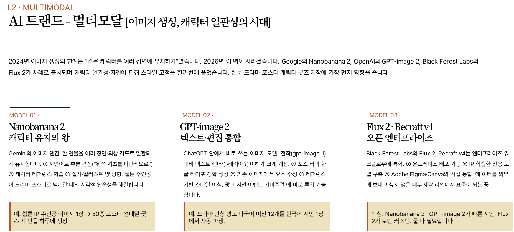
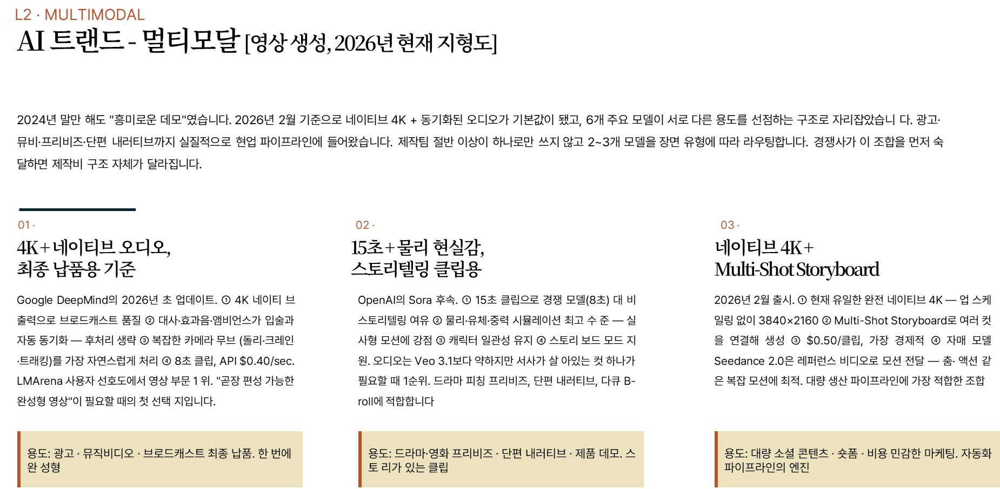
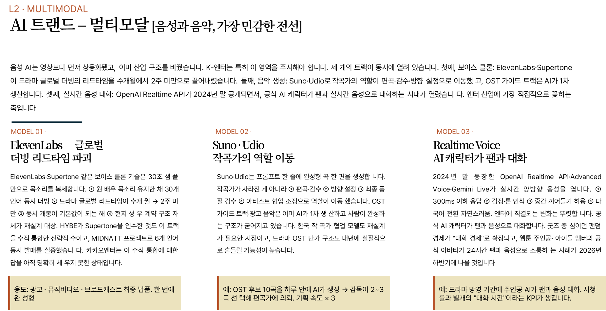
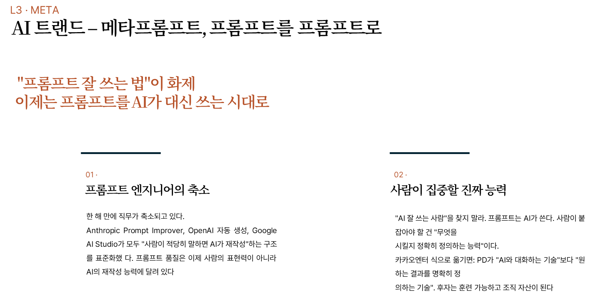
| 세대 | 대표 도구·방법 |
|---|---|
| 프롬프트 | ChatGPT · Claude · Gemini 대화창 · 시스템 프롬프트 |
| 컨텍스트 | RAG · 긴 문맥(100만 토큰) · 파일 업로드 · Projects |
| 하네스 | Claude Code · Cursor · CLAUDE.md · Skills · MCP |
하네스가 잘 작동하려면 그 안에 담기는 프롬프트·컨텍스트가 튼튼해야 한다. 3회차에서 세 세대를 순서대로 쌓는다.
| 층위 | 무엇을 담는가 |
|---|---|
| ① CLAUDE.md | 프로젝트 맥락·규칙·금지·문체 · 모든 대화에 자동 주입 |
| ② Rules·.cursorrules | 부서별·과제별 세부 규칙 · 파일 건드림 범위 |
| ③ Skills | 민원 답변·보고서 생성 등 재사용 가능한 모듈 |
| ④ Tools·MCP | 파일 시스템·터미널·외부 API·DB 연결 권한 |
| ⑤ Approval | 위험 작업 사람 승인 루프 · 로그 저장 규칙 |
CLAUDE.md·Rules·Skills가 탄탄하면 사용자 프롬프트는 짧아진다. 거점리더의 설계 시간은 대부분 ①~⑤에 투자된다.
| 상황 | 권장 방법 |
|---|---|
| 1회성 단발 질의 | 파일 첨부 · 드래그 앤 드롭 |
| 50쪽 이내 문서 | 긴 문맥 · 전체 붙이기 |
| 문서 수백~수천 건 | RAG · 검색 후 청크 주입 |
| 반복 업무 · 팀 공유 | Projects · 시스템 프롬프트 고정 |
| 민감 데이터 포함 | Ollama 로컬 RAG · 내부망 비식별화 |
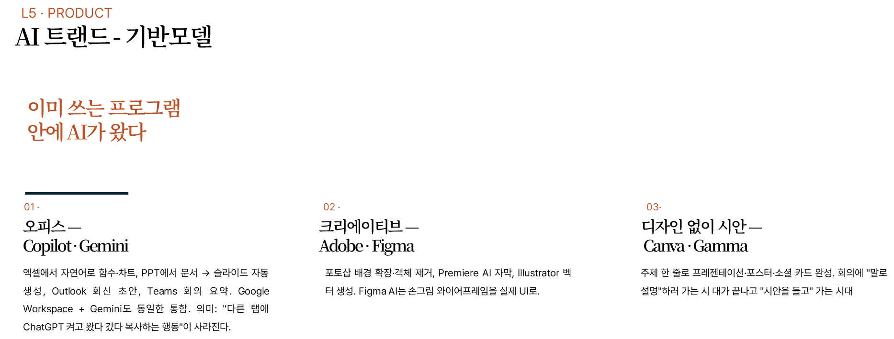
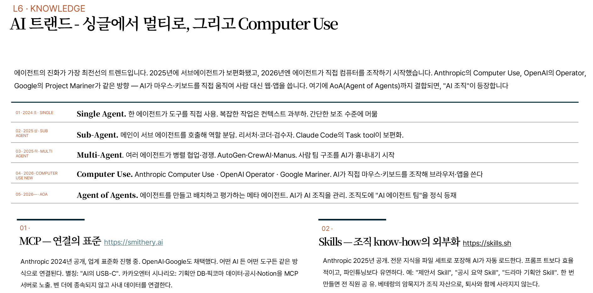
| 유형 | 이름 | 회차 |
|---|---|---|
| 01 | 파이썬 내부망 실행 | 4회차 어시스트 |
| 02 | VBA + Ollama | 5회차 어시스트 |
| 03 | Python + PyInstaller .exe | 4~5회차 |
| 04 | Electron 앱 | 6회차 에이전트 |
| 05 | HTML CDN 단일파일 | 4회차 어시스트 |
| 06 | Node.js 로컬 툴 | 6회차 에이전트 |
| 07 | Ollama 로컬 RAG | 7회차 |
| 08 | 백엔드 결합 웹서비스 | 7~8회차 |
| 09 | API/MCP 풀스택 에이전트 | 8회차 캡스톤 |
VBA+Ollama는 기존 엑셀·한글 환경에 매크로 한 줄 추가로 AI가 들어온다. 신규 시스템 도입 승인 불필요. 외부망↔내부망 루틴을 가장 단순하게 구현하는 조합.
| 단계 | 명령·작업 |
|---|---|
| ① 스크립트 | AI에게 "엑셀 병합 GUI 도구" 요청 → main.py 수령 |
| ② 의존성 | pip install pyinstaller pandas openpyxl |
| ③ 빌드 | pyinstaller --onefile --windowed main.py |
| ④ 배포 | dist/main.exe 파일을 USB·공유폴더로 전달 |
| ⑤ 실행 | 동료 PC에서 더블클릭 · 파이썬 없어도 동작 |
유형 01은 본인이 쓰고, 유형 03은 동료가 쓴다. 파이썬 설치·가상환경 설명 없이 exe만 넘긴다.
- CDN 라이브러리를 HTML에 인라인화
- 외부 네트워크 호출 0
- 개인정보 로컬 처리 · 브라우저 내 완결
- 이 강의안이 같은 방식 — 이 파일 하나
- Tailwind + Chart.js + Vanilla JS 스택
- LocalStorage로 데이터 저장
- 파일 다운로드 · 인쇄 · PDF 출력
- Electron 앱으로 재패키징 가능 (유형 04)
| 상황 | 권장 | 이유 |
|---|---|---|
| 엑셀·데이터 분석 | Python | pandas·matplotlib 생태계 우위 |
| PDF·OCR·AI API | Python | 라이브러리 성숙 |
| 웹 스크래핑·크롤링 | Node.js | Puppeteer·Playwright |
| 실시간 자동화 | Node.js | 이벤트 기반·비동기 |
| CLI 도구 개발 | Node.js | 배포 · 설치 단순 |
| MCP 서버 작성 | Node.js | SDK 지원 우수 |
| 구성 | 기술 선택 |
|---|---|
| 프론트 | Next.js · React · Tailwind |
| 백엔드 | Next.js API · FastAPI · Express |
| DB | PostgreSQL · SQLite · Supabase |
| LLM | OpenAI/Anthropic API 또는 로컬 Ollama |
| 배포 | 내부망 서버 · G-Cloud · Vercel/Netlify |
- ① 인증 · 부서별 권한
- ② 감사 로그 · 버전 관리
- ③ 업데이트는 서버 배포로 즉시 반영
- ④ 외부망·내부망 분리 배포 가능
| 스택 층 | 구성 | 공공 활용 | 담당 |
|---|---|---|---|
| ① FRONTEND | Next.js · 채팅 UI · 대시보드 | 부서원이 자연어로 질의하는 화면 | UI/UX |
| ② BACKEND | FastAPI · Node.js · 인증 · 권한 | SSO · 감사 로그 · 결재 연계 | API |
| ③ AGENT | Claude/GPT · 오케스트레이터 · 서브 에이전트 | 분류·검색·초안·검증 여러 에이전트 협업 | LLM |
| ④ MCP | MCP 서버 · DB·공공API·Slack 연결 | 국가법령정보·공공데이터포털·내부 DB | TOOLS |
| ⑤ RAG·DATA | 벡터DB · 규정집 · 이력 | 근거 인용 · 과거 사례 검색 | KNOWLEDGE |
요구사항을 6칸 캔버스로 정리하고, MCP 서버 선정·보안 검토·승인 루프를 설계. 실제 구현은 에이전트와 개발팀이 수행. 8회차 캡스톤 예시: 인사 데이터 분석 멀티 에이전트.
- 개인 생산성 · 부서 공유 · 기관 서비스
- 사용자 수 증가 = 배포·권한·감사 비용 증가
- 작게 시작해 단계적 확장
- 민감 데이터 → 외부망 유형 제외
- 반복 업무 → 자동화 투자 회수 빠름
- 1회성 → 가벼운 유형 우선
생태계
유형 01·02·05
유형 06~09
사전 준비로 "현업 과제 후보 2~3건 메모" 요청. Part G에서 그중 1건을 거점 미션으로 선언. 9유형 매핑까지 마친다.
| 확장 | 역할 |
|---|---|
| Remote - WSL | WSL Ubuntu를 VS Code로 열기 |
| Python | 파이썬 문법·디버깅·가상환경 |
| Pylance | 타입 힌트·자동완성 |
| GitLens | Git 이력·blame 시각화 |
| Markdown All in One | CLAUDE.md·README 편집 |
| Korean Language Pack | 한국어 UI (선택) |
| Prettier | 코드 자동 포맷팅 |
| ESLint | Node.js 코드 품질 검사 |
| 키 | 동작 |
|---|---|
| Ctrl+P | 파일 빠른 열기 |
| Ctrl+Shift+P | 명령 팔레트 (모든 기능) |
| Ctrl+` | 터미널 토글 |
| Ctrl+B | 사이드바 토글 |
| Ctrl+D | 동일 단어 다중 선택 |
| Ctrl+/ | 주석 토글 |
| Alt+Up/Down | 줄 이동 |
| Ctrl+Shift+G | Git 패널 |
| F5 | 디버그 실행 |
| Ctrl+, | 설정 |
DB 연결
클린징·분류
.pbix 배포
| 업무 | 대시보드 내용 |
|---|---|
| 민원 대시보드 | 부서별 건수·처리 속도·지연 건 |
| 예산 집행 | 항목별·시점별 집행률·잔액 |
| 인사 현황 | 부서별 인원·근속·이동 |
| 공공데이터 | 인구·교통·환경 지표 시각화 |
| 실적 보고 | 사업별 KPI·추이·비교 |